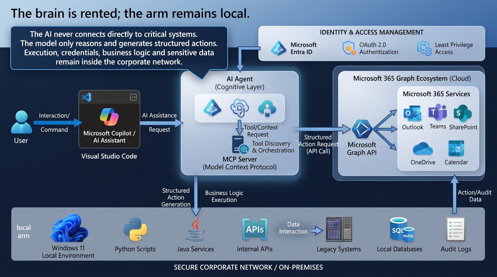

Desmistificando a Inteligência Artificial nas Corporações: Conectando a IA com Segurança e Eficiência no VS Code
Tempo de leitura: 8 minutos
A discussão sobre a adoção de Inteligência Artificial nas empresas frequentemente tropeça nos mesmos lugares: o comitê questiona o custo, o jurídico teme o vazamento de dados e a TI se preocupa com a estabilidade dos sistemas legados. O equívoco fundamental está em tratar a IA como se ela precisasse habitar o centro do sistema de missão crítica, ou pior, como se os dados da operação precisassem migrar para a nuvem de terceiros.
A saída madura baseia-se no desacoplamento clássico: o cérebro é alugado; o braço é local.
O Desenho da Ponte: Cérebro, Protocolo e Execução Local
Para integrar IA sem comprometer o perímetro corporativo, a arquitetura divide-se em três partes essenciais:
- Camada Cognitiva (O Cérebro): O modelo de linguagem (hospedado em VPC, SLM local ou serviço comercial) interpreta intenções e devolve comandos estruturados. Ele não armazena o banco de dados nem possui credenciais diretas.
- Model Context Protocol - MCP (O Protocolo): Um padrão aberto (semelhante a um "USB" para o software) que permite ao editor descobrir e acionar ferramentas locais de forma padronizada, sem conexões artesanais.
- Execução Local (O Braço / Localhost): Seus scripts e servidores locais (Python, Java, etc.) que já possuem as permissões e certificados de rede necessários. Eles leem os dados e acionam as APIs corporativas, garantindo que o núcleo ACID do legado permaneça intacto.

A Bancada Prática: Microsoft 365, VS Code e Python
Muitas equipes operam em ambientes padrão (como máquinas de 16 GB rodando VS Code, Quarkus, Angular e bancos locais H2/PostgreSQL) e já possuem licenças do Microsoft 365 pagas pela instituição.
A conexão entre a IA do editor e os dados corporativos não exige quebrar regras ou criar brechas de segurança:
- O Papel do Script Python: O script atua como intermediário seguro (sidecar). Ele não burla o tenant, mas utiliza a conta corporativa já autorizada.
- Autenticação via OAuth 2.0 (Entra ID): Toda requisição passa pelo diretório de identidades da Microsoft. O sistema aplica rigorosamente o Princípio do Menor Privilégio — a ferramenta local só executa o estritamente necessário.
- Controle de Custos e Throttling: Enquanto o modelo de IA consome tokens baseados no uso do editor, as chamadas ao Microsoft Graph respeitam limites técnicos de tráfego (como o HTTP 429 - Too Many Requests), evitando faturas surpresa e garantindo previsibilidade financeira.
Segurança é Fronteira, Não Discurso
Garantir conformidade com a LGPD e evitar o "sequestro de contexto" (onde dados corporativos alimentam bases de terceiros) depende de três pilares inegociáveis:
- Minimização de Dados: O modelo recebe apenas o trecho, schema ou identificador estritamente necessário para a tarefa imediata.
- Ações Nomeadas e Auditáveis: Não existe acesso irrestrito; cada ação passa por uma ferramenta nomeada com logs rastreáveis.
- Inspeção Humana: O desenvolvedor avalia o diff no VS Code antes de qualquer commit, garantindo que o ser humano continue assinando o comando final.
Modernizar a operação não significa demolir o legado ou expor dados sensíveis. Ao desenhar a fronteira correta entre a inteligência do modelo e a soberania do código local, ganha-se agilidade com a segurança que o negócio exige.
Hashtags: #ArquiteturaDeSoftware #InteligênciaArtificial #Microsoft365 #VSCode #SoberaniaDeDados #Desenvolvimento